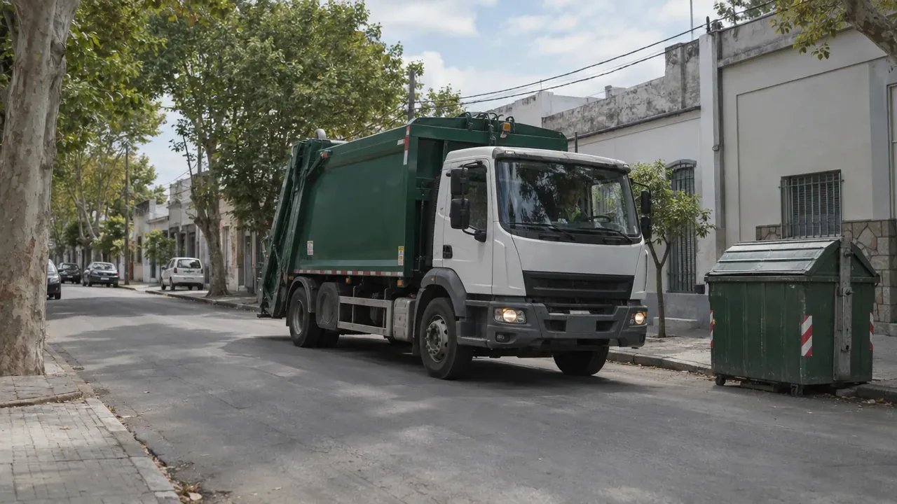
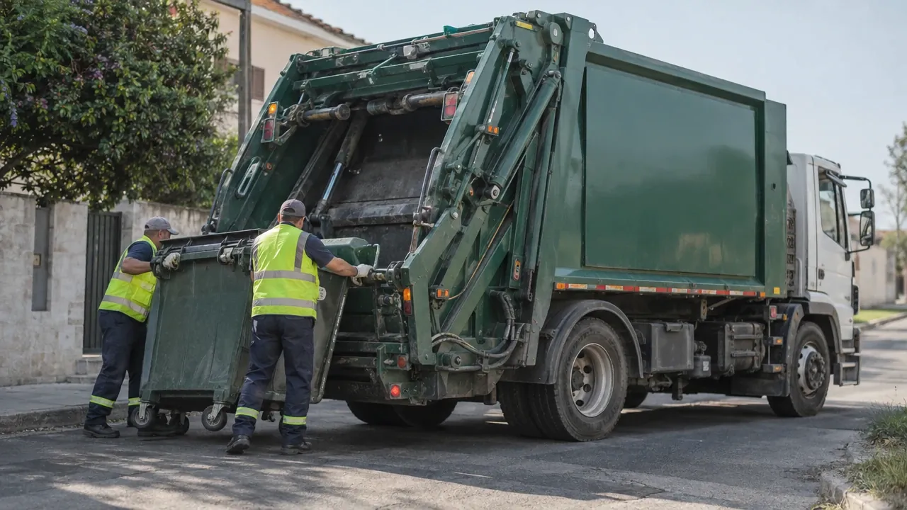

Contenedores
Ubicación, capacidad, tipo de residuo y estado de cada contenedor, con el historial de sus cambios de estado.
SiGeRU
UTU / ESI 2026 - Residuos urbanos
SiGeRU organiza los contenedores, los camiones y los centros de acopio en un solo lugar, y le da a cada vecino registrado un canal directo para informar lo que ve en la calle.

Un Sistema de Gestión de Residuos Urbanos desarrollado para UTU/ESI 2026. Administra los contenedores, los centros de acopio, la flota de camiones y las recolecciones, y le abre a los vecinos un canal para participar.
Los contenedores en servicio y los centros de acopio activos de la ciudad. Tocá un punto para ver su dirección y su estado.
No se pudo cargar el fondo del mapa (sin conexión a internet). Los puntos se ven igual; la lista de abajo tiene las mismas direcciones.
| Código | Dirección | Zona | Tipo | Estado |
|---|
El mapa muestra solo lugares públicos; no muestra datos de ninguna persona.
Lo que se recolecta con SiGeRU y lo que se evita al reciclarlo. Las cifras de CO2 son una estimación, no una medición.
Cargando los datos...
Se multiplican los kilos recolectados de cada tipo de residuo reciclable por un factor de emisión evitada: los kilos de CO2 equivalente que se evitan al reciclar un kilo en lugar de enterrarlo. Son factores de referencia del modelo WARM de la Agencia de Protección Ambiental de Estados Unidos (EPA), no medidos en Uruguay. Los tipos sin una fuente verificada (orgánico y mixto) se informan solo en kilos.
Un contenedor desbordado, roto o mal ubicado se informa en tres pasos.
Con tu correo y una contraseña. No necesita aprobación del administrador.
Buscalo en el mapa o escribí su código (está en el mapa de arriba) y contá qué pasa.
En «Mis reclamos» ves el estado y todo el historial hasta que se resuelve. Te avisamos en la campanita del sistema y, si lo dejás activado, también por correo cada vez que cambia el estado.
Tres módulos que funcionan juntos y comparten los mismos datos.

Ubicación, capacidad, tipo de residuo y estado de cada contenedor, con el historial de sus cambios de estado.
Flota de camiones, rutas por zona con día y hora, y recolecciones que registran el peso y el volumen de cada vaciado.
El vecino registrado informa un problema; la administración lo asigna a una cuadrilla y queda todo anotado, con fecha y responsable.
Registrate con tu correo y una contraseña. No necesitás aprobación del administrador.
Creá tu cuenta para informar problemas y seguir tus reclamos.
Crear cuenta de vecino¿Ya tenés cuenta? Iniciar sesión